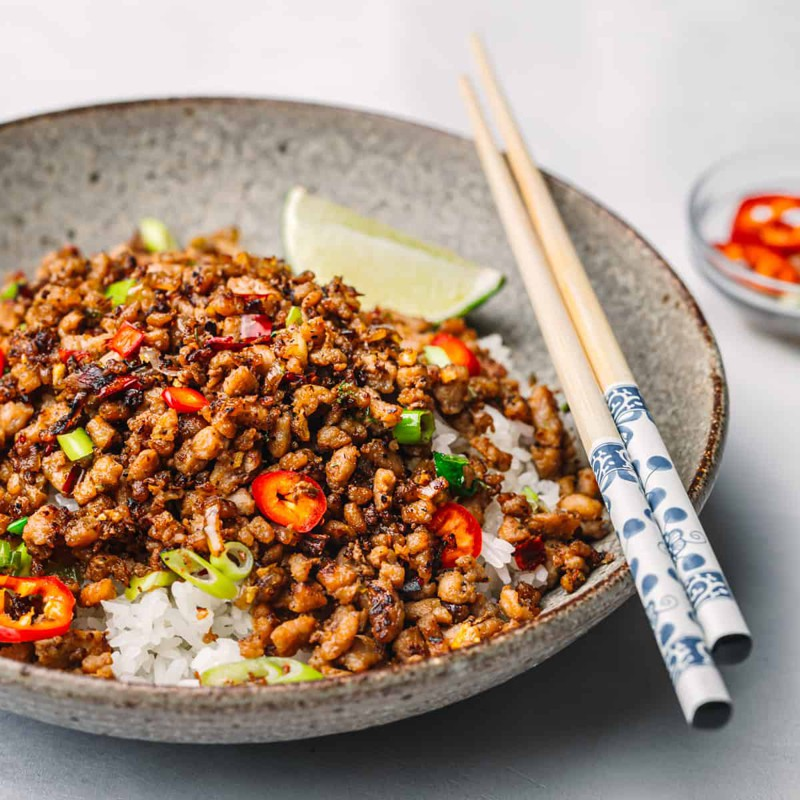
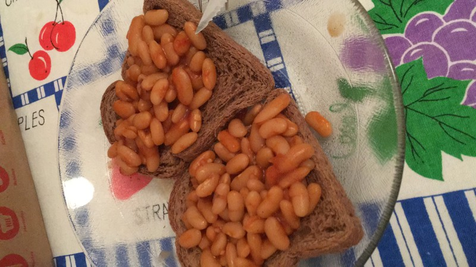
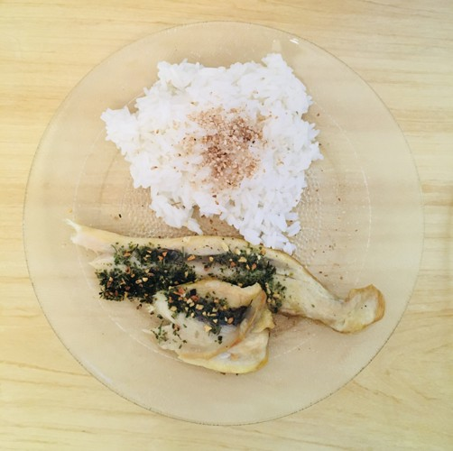
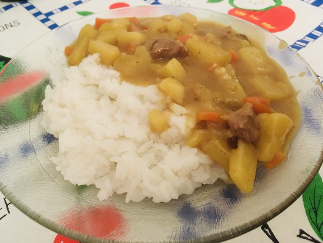

computing : games & art : research
sitemap
|
|
home
computing : games & art : research sitemap |
This is a compendium of recipes I've cooked and liked.
— H82Z17 (JPEG) - view original (96 KiB, JPG)
Pic taken from here.Olive Oil, A Garlic Clove (pressed or minced), A Spoon of Minced Ginger, A Spoon of Minced Chilli, A Big Minced Onion, A Lot of Sugar (a lot!), Fish / Oyster / Soy / Worcestershire Sauce x half a small cup aprox (I tend to mix soy sauce and worcestershire sauce), Ground Meat (500g - 1kg).
Fry the garlic with the ginger, the chilli and the onion. Then add the meat and spread it until it mixes with the other ingredients. When the meat is a whiteish brown, add the sugar and the fish (or oyster or soy or worcestershire or a mix of them) sauce. Fry it until the sugar has melted and the meat is golden-brown. Serve on top of a rice bowl with tomato slices, green onion and cucumber.
— A42L68 (JPEG) - view original (1746 KiB, JPG)
Bolied white beans, four spoons of ketchup, a cup of tomato purée, garlic powder, onion powder, pepper, salt, sugar (a cup or two), six spoons of flour, a chicken stock cube, cold water (0.5l), worcestershire sauce (1/4 cup), vinegar (1/4 cup).
Put the water in a pan and gradualy add the flour, stirring it until both ingredients have mixed into a whitish liquid. Put the pan on the stove and turn it on medium. When the water starts simmering, add the ketchup, the tomato purée, the garlic powder, the onion powder, salt, peper, the sugar, the chucken stock cube, the worcestershire sauce and the vinegar. Stir until it's all mixed together. Once the water boils, add the beans (there should be enough beans so that the sauce sits around 2 cm above them). Make sure to stir everything now and then, otherwise the sauce may get burned and stick to the bottom of the pan. Try the sauce, if it needs more sugar, keep adding sugar. Cook everything for 30 minutes to 1 hour. Serve on toast.
— H44A93 (JPEG) - view original (1596 KiB, JPG)
Fish fillet, rice, sesame, garlic powder, parsley, olive oil, salt, pepper
I tend to cook this in a toaster oven. Times might vary for a conventional oven.
Take the oven tray and spread some olive oil on it. Put the fish fillet on the oiled part and sprinkle garlic powder and chopped parsley on top of it, until it's almost covered. Sprinkle it with salt and pepper and cook it for 10 minutes.
Cook the rice and sprinkle crushed sesame seeds on top of it. Serve everything together.
— V31V71 (JPEG) - view original (1957 KiB, JPG)
A big potato. A middle-sized carrot. An onion. Maybe some meat, if you want. 700ml of water. A stock-cube (any flavour you like). Oil. Flour. Curry powder. Maybe salt, maybe pepper. Rice.
Take a big potato and a middle-sized carrot. Dice them. Then take an onion and dice it. If you eat meat, get some meat and dice it too.
Take a pan and with little oil (4-6 tablespoons) fry half of the diced onions until they are brown. Then add the carrot, potato and meat to the pan and fry them a little too. Then add 700ml of water and a stock cube (I used a vegetable-flavored one) to the pan and let it boil.
While that's cooking, take the other half of the diced onions and put them on a frying pan with again 4 to 6 tablespoons of oil. Fry them while adding 4 to 10 tablespoons of wheat until the onions are brown. Add 4 tablespoons of curry powder to the wheaty onions, mix them well and add the wheat-onion-curry concoction to the pan where the vegetables and meat are boiling.
Cook until the vegetables are soft and the meat is cooked and the consistence of the liquid is right (liquid but kinda mushy). Add salt and pepper to taste and serve on white rice.